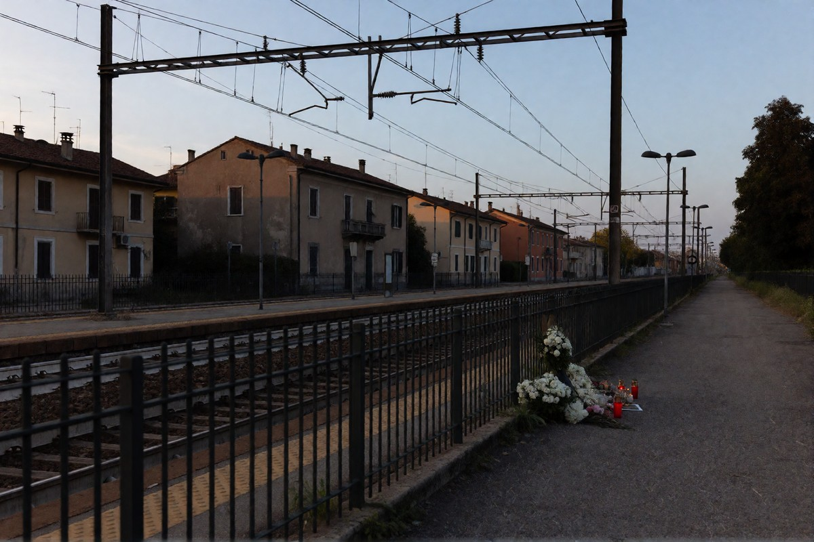

Cronaca · 11 novembre 2026
Strage di Viareggio, Mauro Moretti lascia il carcere dopo quattro mesi

Il tribunale di sorveglianza di Perugia concede la detenzione domiciliare all'ex amministratore delegato delle Ferrovie dello Stato. Diciassette anni dopo la notte in cui morirono 32 persone.
di Franco Zanghì
Mauro Moretti, 73 anni, ex amministratore delegato delle Ferrovie dello Stato, sconterà a casa il resto della condanna definitiva a 5 anni per disastro ferroviario colposo e incendio. Lo ha deciso il tribunale di sorveglianza di Perugia, che gli ha concesso la detenzione domiciliare dopo quattro mesi di carcere.
Moretti si era costituito nel carcere di Orvieto dopo la sentenza della Cassazione del 25 giugno 2026, quella che ha chiuso il processo per la strage di Viareggio. Secondo quanto riferisce l'ANSA può uscire un'ora al giorno, soltanto per esigenze indispensabili, e non deve avere contatti con l'esterno.
Le ragioni dei giudici
Il motivo indicato dal tribunale è la salute. Il suo difensore ha spiegato che Moretti «è dimagrito 15 chili ed è molto deperito».
Nella decisione hanno pesato anche altre circostanze: è incensurato e non è ritenuto socialmente pericoloso, ha chiesto scusa ai familiari delle vittime e ha risarcito le parti civili, ha rinunciato alla prescrizione per alcuni reati e al titolo di cavaliere del lavoro. Non è l'unico dirigente a tornare a casa: anche l'ex amministratore delegato di Rete ferroviaria italiana, condannato per la stessa strage, è ai domiciliari dall'agosto scorso.
Che cosa successe quella notte
Il 29 giugno 2009, poco prima di mezzanotte, un treno merci deragliò alla stazione di Viareggio. Un vagone cisterna carico di gas di petrolio liquefatto si squarciò: il gas invase le strade intorno ai binari e prese fuoco, travolgendo le case vicine. Morirono 32 persone, un centinaio rimasero ferite o ustionate.
Dalla strage alla sentenza definitiva sono passati 17 anni e sette gradi di giudizio.
La voce dei familiari
Daniela Rombi, presidente dell'associazione Il Mondo che vorrei, quella notte perse la figlia. All'ANSA ha detto: «Fortunato a rimanere in carcere così poco». E ha aggiunto: «Non provo però nessuna pena per lui». L'associazione ha ricordato che la detenzione domiciliare è prevista dall'ordinamento e che quella previsione va rispettata.
Il punto
La legge prevede che un uomo di 73 anni, malato e senza precedenti, possa scontare la pena a casa. Non è un favore: è una regola, e vale per Moretti come per chiunque altro.
Il problema non è la decisione di Perugia. Il problema è una giustizia che arriva alla sentenza definitiva quando i condannati sono ormai anziani. Una lentezza così non risarcisce nessuno: né chi ha perso un figlio sotto casa, né chi deve pagare.